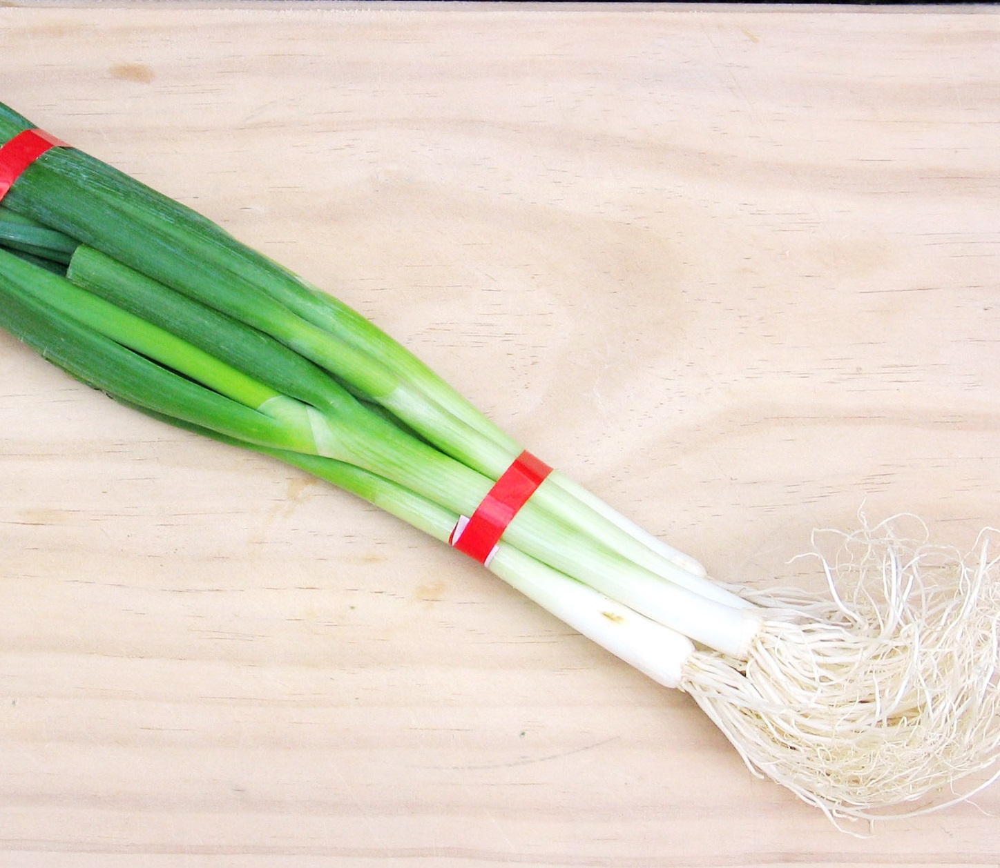

Introduction
Gardening can be complicated or it can be simple. Some plants can require a lot of care, some plants can require barely any. The best thing about gardening is that it can be scaled up or down based on so many variables. While gardening is a hobby of mine now, I used to find the concept daunting. When my housemate moved out and could no longer tend the fruit and herbs he cultivated, I took over and maintained the garden, learning a lot about plants along the way. I've provided some tips to get started on a low maintainence and cheap garden.
How To Grow Spring Onions
Spring onions are one of the easiest plants for an aspiring gardener to grow. They are easy to maintain, they grow fast and you don't even need to buy seeds! If your grocery store sells spring onions with the roots still attached, buy a bunch and follow the guide below
Step-By-Step Guide
- Buy Spring Onions
- Cut the spring onions down to slightly above the base (Where the roots come from)
- Make a small hole in dirt and bury the roots entirely (Fertile dirt is preferred, but spring onions are very sturdy.
- Water the spring onions
If you followed the steps above, check your spring onions tomorrow, you should notice growth! (Wow, so quick!)
Lamiaceae Herb Cultivation and Cloning

While growing from seed is an option, herbs in the Lamiacaea family can be cultivated, or "cloned" from existing plants to create healthy copies of those plants that will grow individually. In terms of success rate, this depends on the herb with leafy herbs like mint and basil being easier and woodier herbs such as rosemary being more difficult.
Lamiacae Herbs
- Mint
- Basil (and thai basil)
- Rosemary
- Sage
- Oregano
- Lavendar
- and more
Step-By-Step Guide
- Take a cutting from a healthy plant (Ensure you leave as much of the stem on your cutting as possible)
- Cut off all leaves except for the top most leaves
- Change water once a day while waiting for the herb to grow roots from the stem
- Once roots are grown, bury roots in dirt and ensure plant is watered
Additional Information
If you're worried about harming your plant by taking cuttings, be reassured. Cutting lamiacae plants actually encourages growth! (wow). Cutting a lamiacae herb above the leaf will prompt two new stems to grow diagonally from where you cut. You can then try using the cutting you took either in your cooking, or to make another plant! (amazing). If you are taking cuttings from plants that are not your own, make sure to ask permission first!